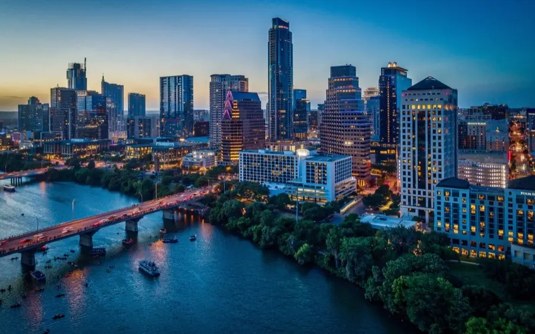

Austin, Texas · planted 2008
Harvest Mission Community Church of Austin
A church impacting the University of Texas campus and the city of Austin — from students to families.
Visit atx.hmccglobal.orgOne family, two churches today — and a commitment to plant more.

Austin, Texas · planted 2008
A church impacting the University of Texas campus and the city of Austin — from students to families.
Visit atx.hmccglobal.orgHong Kong · planted 2015
An international church planted in 2015 when a team of twenty came to the city — valuing transculturalism, reaching students, working adults, and families.
Visit hk.hmccglobal.orgEvery church in this family began with a commitment to plant more. Read the 10 Year Commitment — 10 churches in 10 cities in the next 10 years.